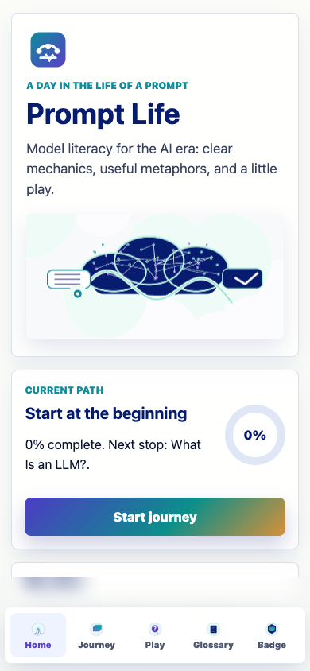
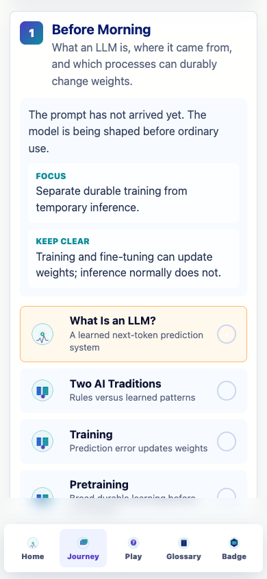
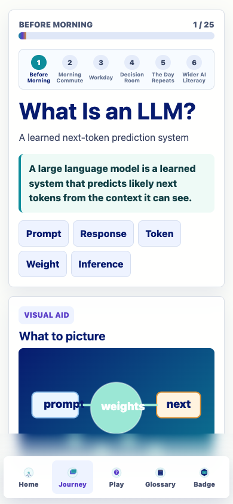
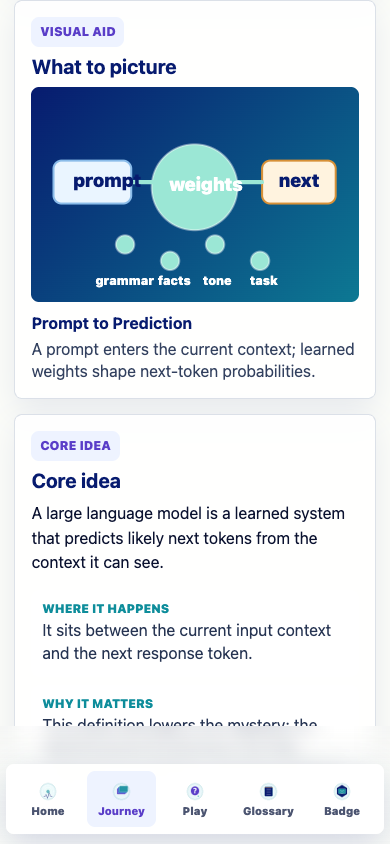
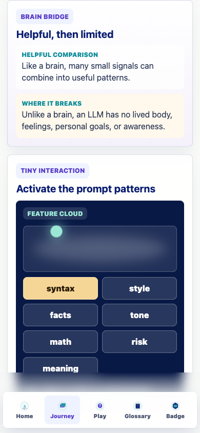
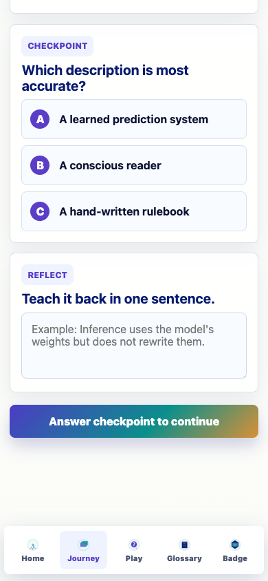
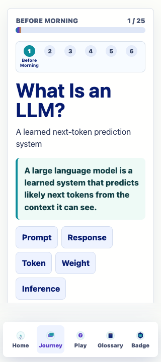
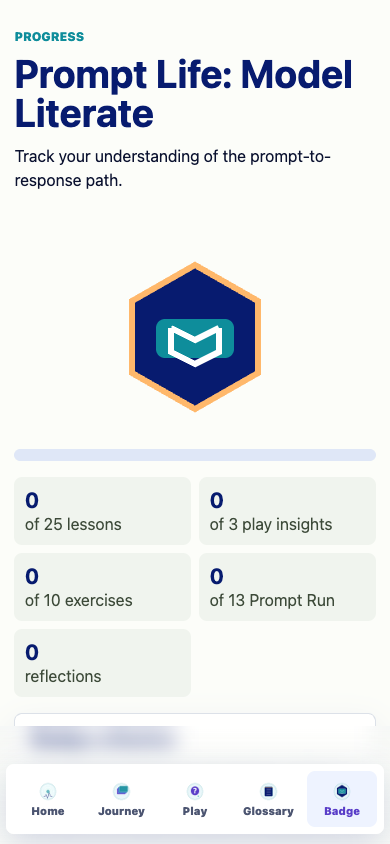
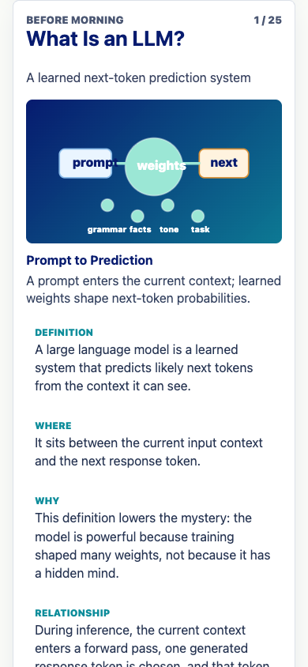
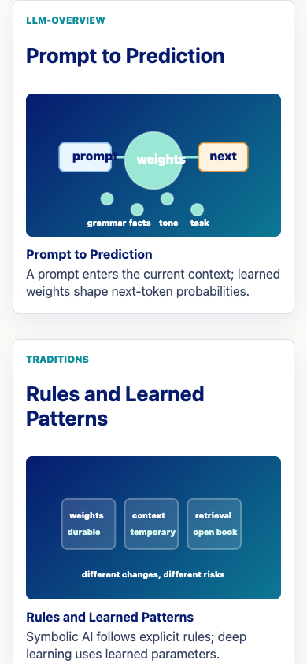

Prompt Life v0.6.0 - June 2, 2026
v0.6 turns Prompt Life into a clearer mobile-first learning path: each lesson now teaches the same way, the app shell scrolls more reliably on phones, the bottom nav has a safe-area-aware frosted gradient, and the review/PDF routes are ready for content QA.
/review/lesson-cards and /review/visual-aids.npm install
npm run dev
Open http://localhost:5173/.
npm run typecheck: passed.
npm run build: passed.
npm run export:lesson-pdf: passed.
Responsive smoke check: no horizontal overflow at 320, 390, or 430px; desktop review route renders 25 lesson cards.
Core app: src/data/content.ts, src/main.tsx, src/styles/global.css, src/components/VisualAids.tsx, index.html, public/manifest.webmanifest, package.json, scripts/export-lesson-pdf.mjs.
Docs and artifacts: README.md, docs/ACCESSIBILITY_QA.md, docs/REVIEW_NOTES.md, docs/CONTENT_REPAIR_V0_6.md, docs/VISUAL_AIDS_V0_6.md, docs/CONTENT_QA_CHECKLIST.md, docs/review/LESSON_CONTENT_MATRIX.md, docs/review/prompt-life-lesson-cards-v0-6.pdf, and v0.6 screenshots.









